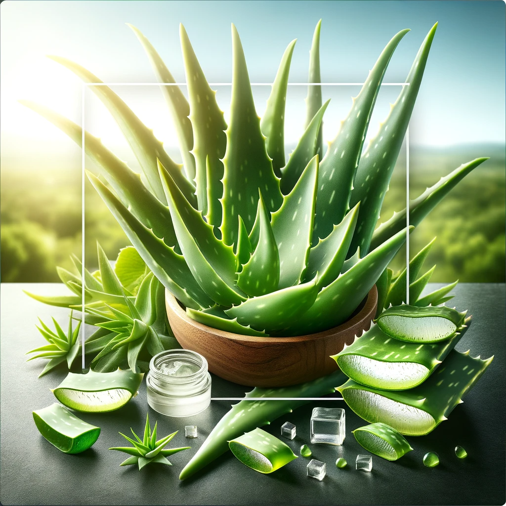
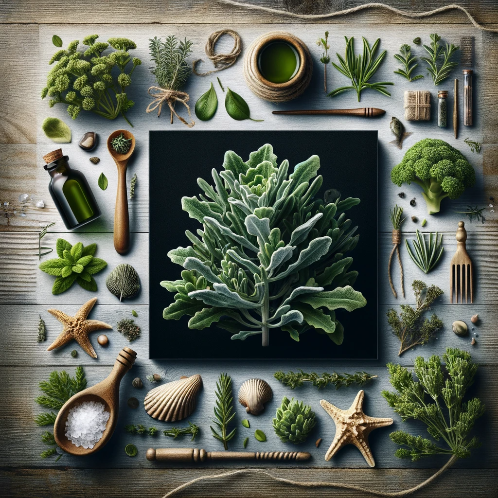
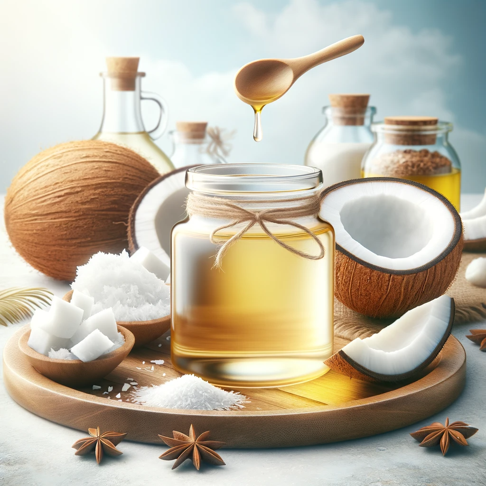

ALOE VERA
L'aloe vera, ma petite pépite verte! Idéale pour apaiser ta peau, elle cicatrise comme par magie. Les coups de soleil n'ont qu'à bien se tenir. C'est un peu comme la crème de la nature!
Dr Mammy
GINGEMBRE
Le gingembre, une racine pleine de vie! Il calme les nausées, réchauffe le cœur, et prend soin de ton ventre. Comme une étreinte chaleureuse de l'intérieur!"
Dr Mammy
BADIANE
La badiane, mon petit truc pour la digestion! Elle chasse les maux de ventre et rend la digestion toute douce. Comme une tasse de thé réconfortante, tu verras!"
Dr Mammy
MIEL
Le miel, mon cher, c'est le trésor des abeilles! Antibactérien, délicieusement sucré, il prend soin de ta gorge, guérit les plaies, et soulage la toux. Un remède doux comme un bisou
Dr Mammy

ARROCHE MARINE
ARROCHE MARINE
(ATRIPLEX HALIMUS)
L'arroche marine, une plante marine aux mille bienfaits! Elle purifie le corps, apaise la digestion, et chouchoute la peau. C'est un peu comme une brise d'océan pour ta santé!
Dr Mammy

HUILE DE COCO
L'huile de coco, un secret bien gardé! Elle nourrit la peau, les cheveux, et même les dents. Les acides gras sont comme une caresse pour ton corps. Essaie-la, c'est comme un bain d'amour
Dr Mammy
ORTIE
Ah, l'ortie piquante, une vraie merveille pour la santé! Remplie de vitamines et d'antioxydants, elle va chouchouter ta peau, tes cheveux et même soulager tes allergies. Essaye donc, c'est comme un câlin de la nature